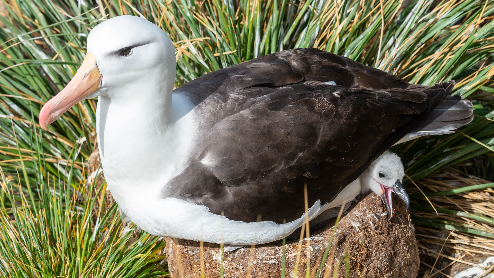

비행이 가능한 조류 중에서 가장 큰 종류에 속하며, 앞서 말한 국내 도래종 알바트로스 기준으로 날개를 편 길이가 3~4m[2], 몸길이가 91cm에 달한다[3] 활공 만으로 수십 킬로미터를 날 수 있다고 한다. 날개 구조는 길고 좁아서 오랜 활공에는 유리하지만, 빠른 이착륙에는 불리하다. 상승기류를 타야 비행을 할 수 있기 때문에, 바닷가 절벽에서 날갯짓을 퍼덕퍼덕한다. 어린 개체들의 경우 비행에 능숙하지 못해 벼랑 아래로 직행하거나 백상아리 같은 동물의 먹이가 되기도 한다. 먹이로는 주로 물고기나 오징어, 문어 등 다른 해양생물을 먹는다. 덩치가 큰 만큼 날개 힘도 세다. 먼 거리를 이동해야 하기때문에 비행속도가 상당히 빠른데 회색머리 알바트로스는 수평비행시 시속 127km/h을 기록하여 기네스북에서 수평비행시 가장 빠른 새로 기록되었다. 알바트로스는 긴 날개를 이용해서 아주 적은 에너지만으로도 오랜 시간 공중에 떠 있을 수 있다. 이때 알바트로스는 Dynamic Soaring이라는 비행술을 쓰는데, 상승기류를 활용해서 자기의 에너지를 쓰지 않고 나는 방식이다. 상승기류의 부양력이 떨어지면 비행 고도를 낮추는데 이러면 위치 에너지가 감소한 만큼 운동 에너지, 즉 속력이 증가하기 때문에 바로 다음 상승기류를 찾아 날아오를 수 있다. 알바트로스 중 한 종류인 나그네알바트로스(Wandering Albatross)는 이런 효율적인 비행술 덕에 수년 씩 바다에서 생활하다가 번식을 위해서만 땅에 오기도 한다. 속칭으로 '바보새'라고 불린다. 진짜 지능이 낮아서 그런 건 아니고, 날개가 너무 커서 땅 위에서는 날개를 질질 끌며 걸어다니기 때문에, '하늘에서는 왕자였지만 땅에서는 비참한 신세'라고 노래한 시인[4]도 있다. 원래 일본에서 이 새를 두고 바보새라는 뜻의 아호도리라고 불렀고, 이것이 일본의 공식 명칭으로 사용되고 있다. 그리고 이 새의 날개가 거추장스러워 이착륙을 잘 하지 못하는 데서 유래한 것으로 기원을 밝히고 있다. 알바트로스가 자연적으로 서식하는 일본과는 달리, 국내에서는 길을 잃어 찾아오지 않는 한 여간해서는 볼 수가 없는 종이므로 일제강점기 일본의 생물도감 등을 그대로 직역하면서 '바보새가 별명이다'라는 인식과, 일본에서 말하는 바보새의 기원이 그대로 퍼지게 된 듯 하다. 현재까지도 각종 어린이용 생물 교재에서 바보새라는 별명과 그 기원을 그대로 싣고 있다.
그런데 카리스마 있는 옆면과는 달리 정면은 확실히 바보같다. 뒤뚱거리며 걷는 모습과 사람을 동족으로 착각하여 인사[5]를 하는 모습, 순진한 눈망울 등 여러 매력이 있는 새다. 백치미 짝짓기 춤이 특이하고 아름다워 다큐 등에서 곧잘 소개되곤 한다. 링크 한번 결혼하면 거의 평생동안 지낸다. 번식할 수 있는 나이는 약 10년으로 일년에 또는 이년에 한번만 알을 낳는 새이며, 알이 부화하는데까지 9개월이나 걸리기도 한다. 암컷과 수컷 모두 알을 품는데 기여하고 새끼 양육도 부모가 함께 한다. 보통 부부가 함께하는 기간은 50년 내외로 이혼율이 0에 수렴한다. 서강대학교의 상징동물이기도 하다. '날기 위해 힘겹게 날갯짓해야 하지만 일단 날게되면 가장 멀리, 가장 높이 날 수 있는 새'라는 의미를 담고있다고 한다. 서강대학교의 상징탑의 이름도 알바트로스 탑이다. 디즈니에서 제작한 극장용 애니메이션 'the rescuers down under'에서는 생쥐들의 여객기가 되어주는 알바를 하는 새로 나온다. 진짜 알바트로스 바보새라는 별명답게 여기서도 좀 얼빵하며, 착륙을 잘 못해서 허리에 부상을 입고 생쥐들이 의사로 있는 병원에 입원했다가 하마터면 마루타가 될 뻔한다. 소닉 더 헤지혹 시리즈의 스톰 디 앨버트로스는 힘은 세지만 지능은 낮은 녀석으로 나온다. 실제 알바트로스와는 외모가 좀 다르다. 2017년 9월 22일부터 tvN에서 매주 수요일 오후 9시 30분에 방영하는 예능 프로그램이다. 새뮤얼 테일러 콜리지의 서사시 노수부의 노래에 보면 주인공인 늙은 선원이 신의 사자로 온 알바트로스를 석궁으로 쏴죽이는 바람에 저주에 시달리는 장면이 나온다. 모바일 게임 라스트 오리진에 등장하는 AI로봇 AGS HQ1 알바트로스. 제1차 세계 대전의 독일군 주력 전투기였던 알바트로스 전투기가 여기서 이름을 따왔다. 열한 마리 고양이에 나오는 새가 알바트로스이다. 갈매기라고 생각하는 사람들도 있지만 나는데 준비가 필요하다는 것이나 이 새가 나오는 에피소드 제목이 '열한 마리 고양이와 바보새'인데 알바트로스의 별명이 바보새인 것을 고려하면 바보새가 맞다.
